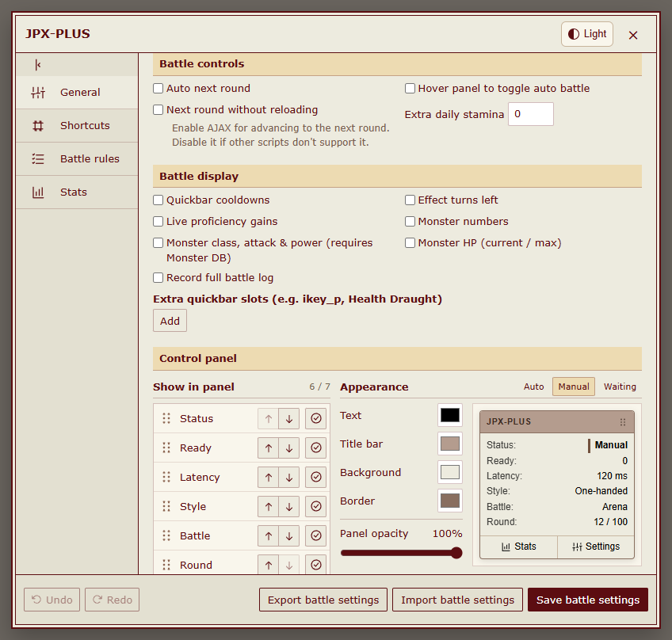

HENTAIVERSE HELPER
Your battles. A clearer view.
Explore battle rules, statistics, and shared configs on desktop and mobile.
Special thanks to JPX author 闯关弟子. Without his work, JPX-PLUS would not exist.
Optional language packs
简体中文 · 繁體中文（台灣） · 繁體中文（香港） · 日本語 · 한국어
Enable one pack with the main script, then refresh. English needs no pack. Preview screenshots below are available in English and Simplified Chinese.
Basic settings
Battle controls, display options, and panel colors in one place.

The image could not be loaded. Open the original image

Switch themes without changing the page or sample data.